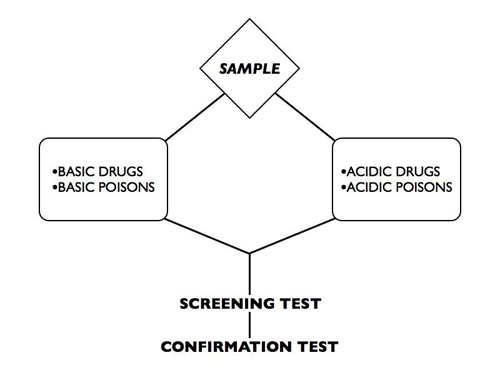

For a forensic toxicologist to determine the identity and quantity of drugs or poisons within an individual, the suspected substances must be extracted and isolated from the body fluid, organs, or tissues. There are several procedures used to isolate and extract drugs and poisons. Most of these involve the use of acids and bases.
An acid is any substance that releases hydrogen ions (H+) when dissolved in water. A base is any substance that accepts hydrogen ions (H+) when dissolved in water. Most drugs and poisons are either acids or bases. For example, most barbiturates have a pH below 7; therefore, they are acidic. Most amphetamines have a pH above 7 and, therefore, are basic.
During an acid-base extraction procedure, body fluids, tissues, or organs are placed in an acidic solution and/or a basic solution. Acidic drugs or poisons are easily extracted from an acidic solution; basic drugs or poisons are easily extracted from a basic solution.
After these acid-base procedures are completed, the drug or poison is identified as an isolated sample. The isolated sample(s) then goes through a screening test and, finally, through a confirmation test.
